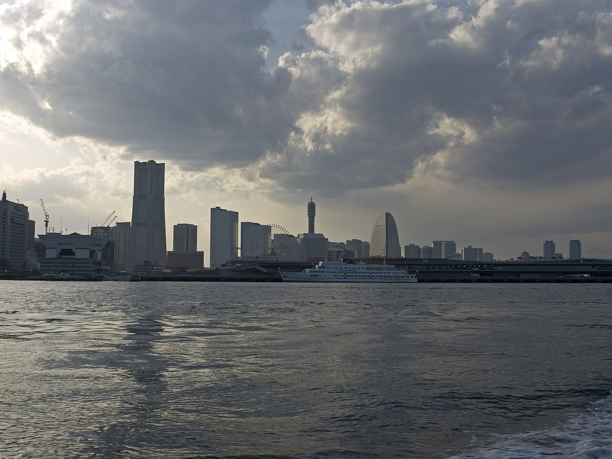

Yokohama and Tokyo in a Port Day: The Waterfront or the Capital

Yokohama gives you a choice no other port on a Japan cruise offers: a genuinely good city right outside the terminal, or the capital an hour away by train. Both are real options, but only one fits a port day. Pick one, commit to it, and the day works.
Arriving: Osanbashi, and two other terminals
Most large ships dock at Osanbashi Yokohama International Passenger Terminal, 1-1-4 Kaigan-dori — a wave-shaped wooden pier in the heart of the waterfront, about a 7-minute walk from Nihon-odori station on the Minatomirai Line. The terminal's rooftop is a public park, open 24 hours and free, with views across Tokyo Bay to the Minato Mirai skyline. Smaller luxury ships use Shinko Pier, also known as Yokohama Hammerhead, about a 10-minute walk from Bashamichi station. The tallest ships berth at Daikoku Pier, well out of the centre, where you will need a bus or taxi to reach the trains. Confirm which terminal your ship uses before booking anything. Ships dock; there is no tender.
Staying in Yokohama: the waterfront day
Yokohama's waterfront is entirely walkable from Osanbashi — nothing essential is more than about 25 minutes on foot. Start at Yamashita Park, the bayfront promenade beside the pier, then walk into Minato Mirai 21, the modern waterfront district of towers, malls and the Cosmo World ferris wheel (roughly ¥1,000 a ride). The Cup Noodles Museum, two minutes from Minatomirai station, is the best-value attraction in the area — ¥500 for adults, free for under-18s, closed on Tuesdays — and the workshop where you design your own cup of noodles costs another ¥500 and sells out on weekends, so book the timed ticket online in the morning. Yokohama Chinatown, the largest in Japan, is a 10-minute walk from the waterfront and is the place for lunch: dumplings, steamed buns and ramen run roughly ¥1,000–2,000. The Red Brick Warehouse, a converted customs building of shops and restaurants, is the classic afternoon stop. One warning: the Landmark Tower's Sky Garden observation deck has been closed since the end of 2025 for renovation, reopening planned for 2028 or later — do not build the day around it. The paid viewpoint that is open is Yokohama Marine Tower near Yamashita Park, roughly ¥1,000 on weekdays and ¥1,200 at weekends, or use the free Osanbashi rooftop instead.
Going to Tokyo: one district, not the city
Tokyo is the better day only if the ship is in for nine or ten hours. From the pier, walk to Nihon-odori and take the Minatomirai Line to Yokohama station, then the JR Tokaido Line — about 45 to 55 minutes to Tokyo Station for roughly ¥760, or a through train to Shibuya in about 40 to 50 minutes for roughly ¥540. The "30 minutes to Tokyo" you will read everywhere is Yokohama Station to Tokyo Station; from the ship it is longer, leaving about three hours in one Tokyo district on an eight-hour call. So pick one district and stay there: Asakusa for Senso-ji Temple and the old shopping street leading to it; Shibuya for the crossing and the Hachiko statue; or Shinjuku for the free observation deck at the Tokyo Metropolitan Government Building. Do not try to do two districts — the subway between them eats 40 minutes each way. A calmer alternative if Tokyo feels too rushed: Kamakura, about 50 minutes by train from Yokohama, where the Great Buddha sits outdoors among the temples.
Getting around
Buy or load an IC card — Suica or Pasmo — at the station and tap it everywhere: trains, the Minatomirai Line and most buses take it. A one-day Minatomirai Line pass runs about ¥460. Trains to Tokyo run every 5 to 10 minutes, so there is no timetable to memorise — but there is a hard deadline. Leave Tokyo at least 60 minutes before all-aboard: 30 to 40 minutes on the train, plus the walk from the station back to the terminal. For a Yokohama-only day, 30 to 40 minutes from anywhere on the waterfront is enough.
What a port day costs (approximate, per person)
- Trains in Yokohama for the day: roughly ¥500–1,000
- Return train to Tokyo: roughly ¥1,100–1,500
- Cup Noodles Museum: roughly ¥500
- Marine Tower observation deck: roughly ¥1,000–1,200
- Lunch in Chinatown or a ramen shop: roughly ¥1,000–2,000
- Yamashita Park, the waterfront walk, Osanbashi rooftop: free
- Comfortable total, Yokohama-only day: roughly ¥2,500–4,000
Tips for cruisers
- Decide Yokohama or Tokyo before you dock. The Tokyo day needs a nine-hour call to be worth it.
- Check the terminal. A Daikoku berth adds a bus or taxi leg to everything; an Osanbashi berth puts you on the waterfront already.
- Do not chase the Landmark Tower deck. It is closed until 2028 — the Marine Tower or the free Osanbashi rooftop is the view now.
- Leave Tokyo an hour early. The train is reliable, but the walk from Nihon-odori back to the ship is the part people forget to count.
Prices and hours are approximate and were checked in November 2026; fares and ticket prices change, and the Landmark Tower Sky Garden closure runs to 2028 or later. Confirm on the day if a price decides the plan.